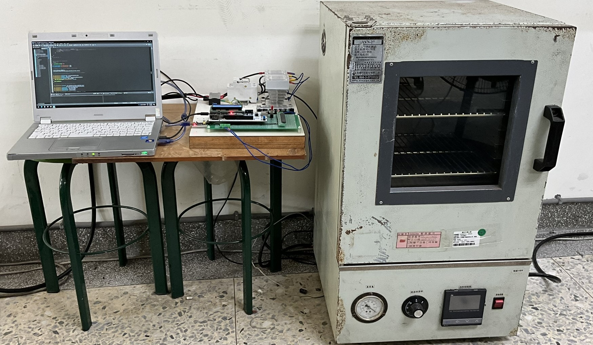
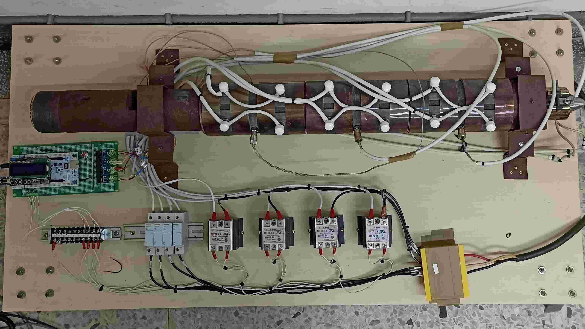
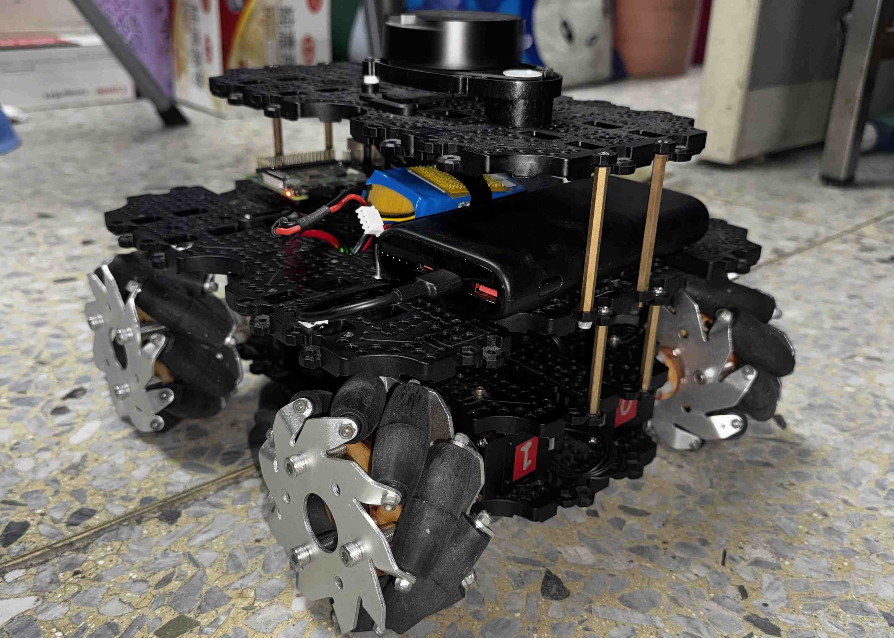
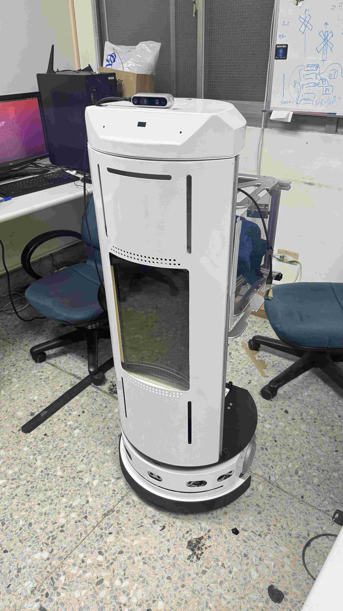
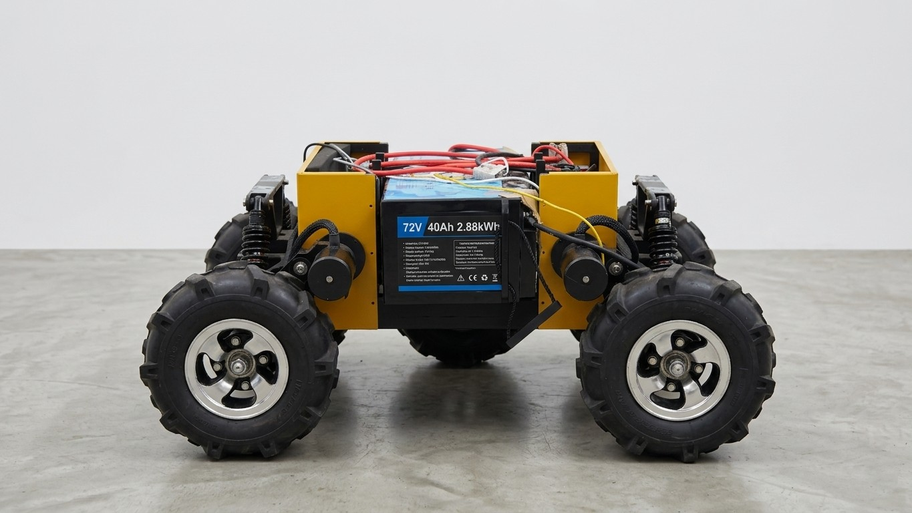
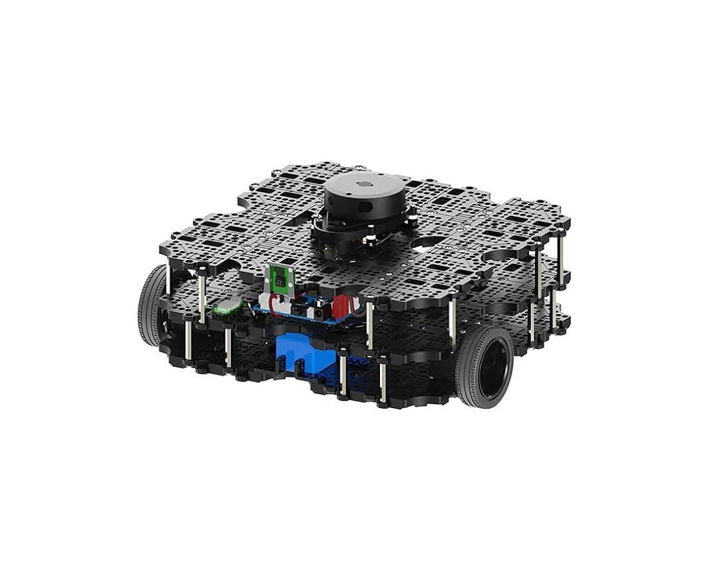
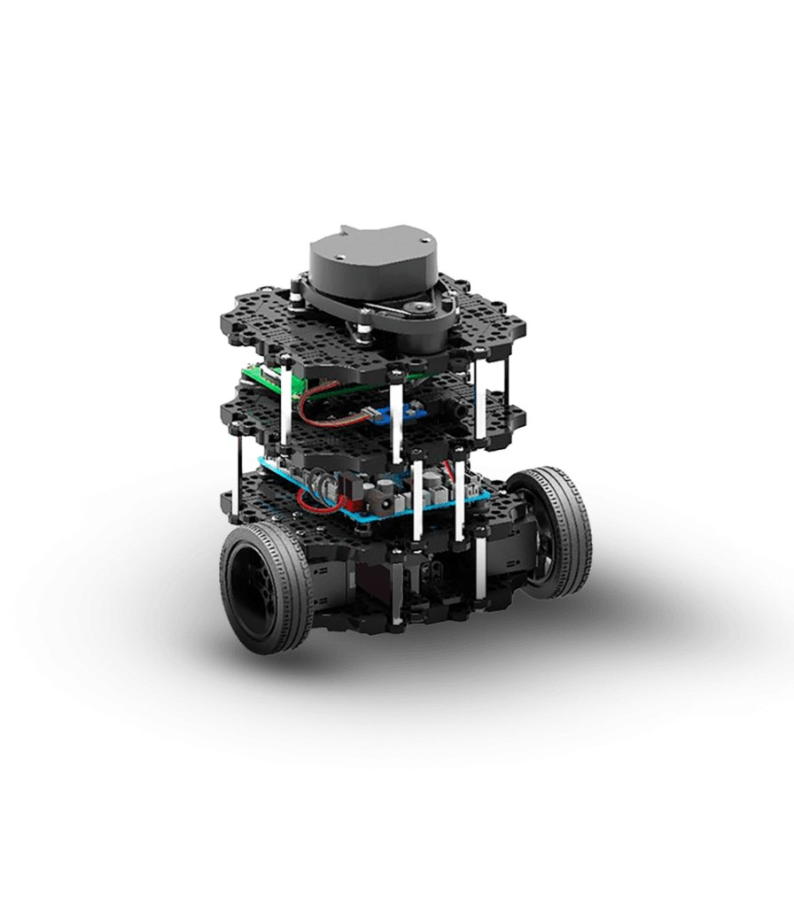

Hybrid AI controllers designed for real-world industrial and robotic systems, validated on experimental platforms.
Designing three complementary families of controllers for nonlinear, uncertain systems: intelligent control uses AI methods as the controller and skips the need for an explicit plant model; adaptive control keeps a familiar PID-style structure but tunes its parameters online; intelligent adaptive control that combines both learning the dynamics while adapting in real time. Each family answers a different question, and all are validated on real industrial test rigs and mobile robotic platforms.
Real plants, whether an industrial heating oven, an extrusion barrel, or a wheeled mobile robot, share three difficulties: nonlinear dynamics, parametric uncertainty, and time delays. Classical PID handles none of them gracefully. My research develops three complementary control families that each attack a different part of the problem.
Intelligent control, using AI methods as the controller itself, identifies as a self-learning algorithm that receives historical input-output data, then generates the controller output directly.
Adaptive control, keeping a familiar PID structure or other well-known standard methods but letting its gain parameters tune themselves online. When the plant structure is approximately known but its parameters drift, the right strategy is to preserve the controller form and adapt only the gains.
Intelligent adaptive control, the union of both. The most powerful family is also the most demanding to design, as the main controller acts as the intelligent controller with the addition of adaptive system identification that learns the plant dynamics AND adapts its parameters in real time.
Building the algorithmic engine behind my adaptive controllers across four AI families — fuzzy neural networks, broad learning systems, evolutionary algorithms, and reinforcement learning. The signature of this thrust is not any single method, but the systematic hybridization of these methods to meet the dual demands of fast online adaptation and real-time deployment on control hardware.
Modern control problems demand learning architectures that adapt online, run in real time on embedded hardware, and remain interpretable enough for engineers to trust. No single AI method satisfies all three constraints, as deep networks are expensive, fuzzy systems lack scalability, vanilla RL is sample-hungry, and evolutionary search is offline by nature. My research treats these methods as complementary building blocks and engineers hybrid architectures that combine their strengths.
Fuzzy Neural + Broad Learning Systems (BLS) hybrids. My Output Recurrent Fuzzy Broad Learning System (ORFBLS) injects output recurrence and fuzzy membership functions into BLS, giving it the dynamic memory needed for time-delay systems while preserving fast online adaptation. I have extended this further with polynomial fuzzy consequents and RMSprop-based online optimization, producing a two-layer learning controller that combines stability with rapid convergence.
Fuzzy + LSTM + BLS. A complementary line integrates LSTM cells directly into the fuzzy-BLS pipeline, yielding the ORFNL-LSTM-BLS controller that handles long-horizon temporal dependencies in nonlinear digital time-delay dynamic systems.
Fuzzy + Reinforcement Learning. For control problems where dynamics are too complex to derive a model; for example, an omnidirectional AMR navigating among moving obstacles, we developed an autonomous steering system using Fuzzy TD3 with GRU-Attention.
Fuzzy + Bayesian filtering + BLS for multi-robot systems. We developed a Global Cooperative Localization method using Fuzzy DDEKF augmented with BLS for swarmed omnidirectional mobile robots operating under sensor and motion uncertainties. The BLS component compensates for the nonlinear bias terms that vanilla EKF approaches typically struggle with, a clean example of why hybridization wins over any single method in isolation.
Evolutionary algorithms. We explore the Genetic Algorithms (GA) and Particle Swarm Optimization (PSO) as complementary tools for hyperparameter tuning, controller structure search, and offline pretraining of the fuzzy-neural and BLS hybrids described above.
Bringing fuzzy and broad learning ideas into mobile robotics — autonomous steering for omnidirectional AMRs in dynamic environments, fixed-time trajectory tracking for nonholonomic platforms, and cooperative localization for swarmed robot teams operating under uncertainty.
Autonomous Mobile Robots (AMRs) face two persistent challenges in industrial deployment: safe navigation in dynamic environments and accurate localization when GPS or fiducials are unavailable. My work attacks both problems by transplanting the control and learning techniques developed in industrial settings into mobile robotic contexts.
For steering, I co-developed an autonomous steering system using Fuzzy TD3 and GRU-Attention for omnidirectional AMRs. Fuzzy TD3 — a fuzzy-augmented variant of the Twin Delayed DDPG reinforcement learning algorithm — handles continuous action spaces in cluttered, dynamic environments, while the GRU-attention module gives the agent a sense of recent history needed to anticipate moving obstacles.
For trajectory tracking on nonholonomic AMRs, I extend my fixed-time sliding-mode work with adaptive sliding-mode observers that estimate unmeasured velocities and disturbances in real time, achieving robust trajectory following with guaranteed settling times.
For multi-robot systems, my collaborators and I developed a Global Cooperative Localization method using Fuzzy DDEKF (Discrete-time Distributed Extended Kalman Filter) and Broad Learning Systems for swarmed omnidirectional mobile robots operating under sensor and motion uncertainties — the BLS component compensates for the nonlinear bias terms that vanilla EKF approaches typically struggle with.
Pushing visual SLAM into the territory where geometric reasoning meets data-driven scene understanding. Recent work introduces photogrammetric keyframe selection and static conditional probability models for RGB-D SLAM, alongside industry-driven vision pipelines that convert RGB imagery into depth and 3D point clouds.
Visual SLAM (Simultaneous Localization And Mapping) is the foundation of any robot that needs to know where it is and what's around it. Classical RGB-D SLAM pipelines, however, often suffer in scenes with dynamic objects, weak features, or poorly chosen keyframes. My recent work proposes an Enhanced RGB-D Visual SLAM framework that addresses these issues on two fronts.
First, a photogrammetric keyframe selection method chooses keyframes based on principles drawn from photogrammetry — geometric configuration quality and parallax — rather than purely heuristic distance or frame-count thresholds. This produces a more stable backbone for the SLAM graph and reduces drift over long trajectories.
Second, a static conditional probability model reasons about which pixels in a scene are likely to belong to static structure versus moving objects. Pixels flagged as dynamic are downweighted in pose estimation, making the system robust in environments with pedestrians, vehicles, or other moving entities — settings where vanilla ORB-SLAM-style methods often fail.
Complementing this academic work, my AI System Development internship at the Industrial Technology Research Institute (ITRI) in Taiwan focused on the practical side: developing a complete vision pipeline that converts RGB images into dense depth maps and 3D point clouds for automotive and robotic sensing applications — bridging research-grade algorithms with deployable, latency-sensitive systems.
Below are the testbeds used at the Advanced Electrical Control Lab (AECL), Department of Electrical Engineering, National Chung Hsing University.

Lab-scale industrial heating chamber at the AECL Lab, NCHU. Used as the primary testbed for validating adaptive and intelligent temperature control on a nonlinear time-delay dynamics thermal process.

Multi-zone industrial extrusion barrel testbed at the AECL Lab, NCHU. Used to validate MIMO setpoint tracking control of temperature profiles across coupled heating zones.

Omni-wheeled autonomous mobile robot used as the main hardware for testing adaptive and intelligent algorithms for trajectory tracking and cooperative localization across swarmed teams.

Round-body nonholonomic wheeled mobile robot in the form factor of a service-delivery robot. Used to validate adaptive and intelligent trajectory tracking for meal-delivery and hospital-delivery scenarios.

Industrial four-wheeled mobile platform provided through partner collaboration. Used for outdoor navigation and autonomous inspection experiments on varying terrain.

Standard ROS-based research platform equipped with 360° LiDAR for autonomous navigation, cooperative localization, and distributed estimation algorithms.

Compact ROS-based research platform with 360° LiDAR for autonomous navigation, cooperative localization, and distributed estimation algorithms.